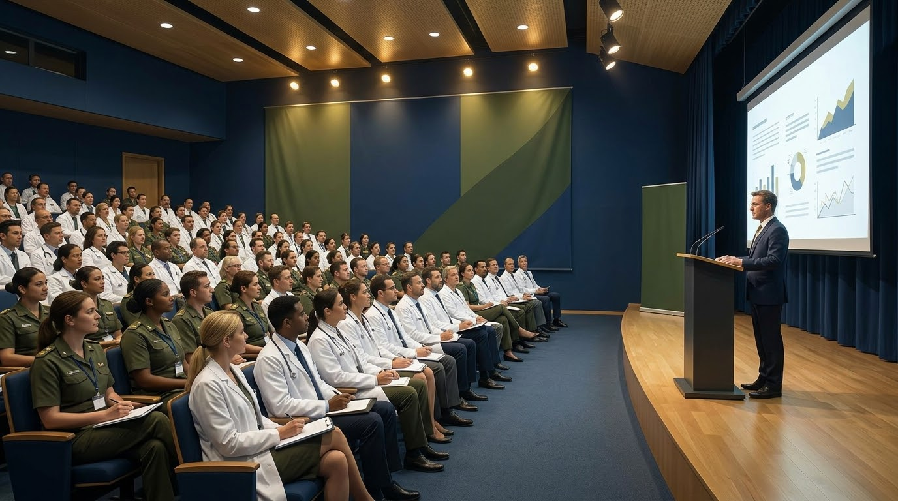
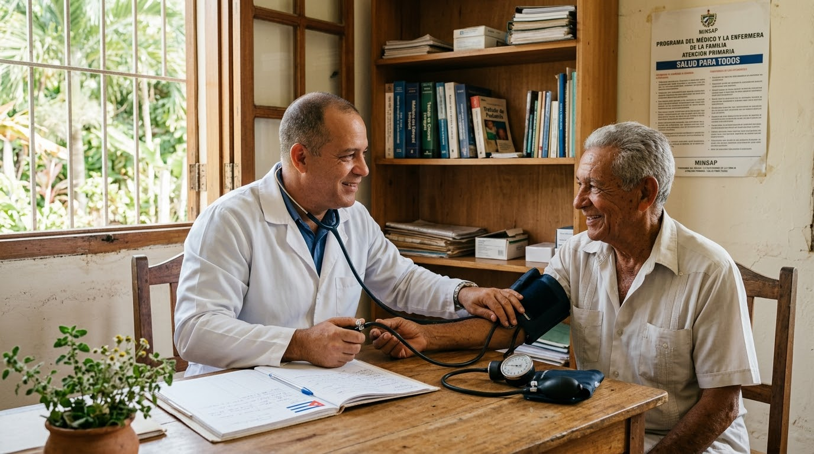

Servicios de salud ante epidemias
Vigilancia, respuesta y lecciones aprendidas.
«Dr. Joaquín Castillo Duany»
Avances de los servicios médicos, integración interinstitucional
y transformación digital.
Santiago de Cuba · Modalidades presencial y virtual
para el cierre de recepción de resúmenes · 30 nov 2026
Tres ejes transversales que sostienen el sistema de salud cubano: los avances clínicos, la articulación entre instituciones y la digitalización al servicio del paciente.
Durante 64 años el Hospital Militar «Dr. Joaquín Castillo Duany» ha cuidado la vida con ciencia. Hoy esa ciencia sale del expediente y sube al escenario nacional: epidemias, medicina natural, docencia, asistencia hospitalaria y atención primaria se encuentran en un mismo espacio de discusión.
«64 años cuidando la vida con ciencia.»
Un escenario científico nacional que reúne servicios médicos militares y civiles, docencia, medicina tradicional y transformación digital.
Cuota $50 · se paga el día del curso
Cuota $300 · desde cualquier provincia
Hospital Militar «Dr. Joaquín Castillo Duany»
Cuota $1500 · Santiago de Cuba
6 de enero de 2027 · Santiago de Cuba
Los cinco ejes oficiales de la III Jornada Científica Nacional.
Vigilancia, respuesta y lecciones aprendidas.
Tradición con evidencia y rigor científico.

Formar investigando, investigar formando.

La sala como espacio de producción científica.
Desde el consultorio hasta la comunidad: todo cuenta.
Avances de los servicios médicos, integración interinstitucional y transformación digital.
Envía tu título y resumen a las gestoras de información de la Biblioteca del Hospital Militar, en persona o por correo con acuse de recibo.
Enviar mi resumen ahoraTrabajo completo en Word hasta el 10 de diciembre de 2026
| Fechas | Virtual 6–7 ene 2027 · Acto por el 64 aniversario 7 ene 2027 · Presencial 8 ene 2027 |
|---|---|
| Curso pre jornada | 7 al 11 de diciembre de 2026 |
| Lugar | Santiago de Cuba — Biblioteca del Hospital Militar «Dr. Joaquín Castillo Duany» |
| Resumen (título + resumen) | Hasta el 30 de noviembre de 2026 · entrega personal o correo con acuse de recibo |
| Trabajo completo | Formato Word, hasta el 10 de diciembre de 2026 |
| Pago | Presencial y virtual antes del 10 de diciembre de 2026 |
| Formas de presentación | Tema libre (PowerPoint · Office 2010) · Mesa redonda · Cartel digital |
| Cuotas | Presencial $1500 · Virtual $300 · Curso pre evento $50 (se paga el día del curso) |
| Convocatoria completa | https://ldaniel91.github.io/jchme/ |
Biblioteca del Hospital Militar «Dr. Joaquín Castillo Duany» · Santiago de Cuba
Entrega personal, o correo con acuse de recibo a:
Encuentra el programa, ejes temáticos, cuotas, formularios y toda la información actualizada.
64 años cuidando la vida con ciencia